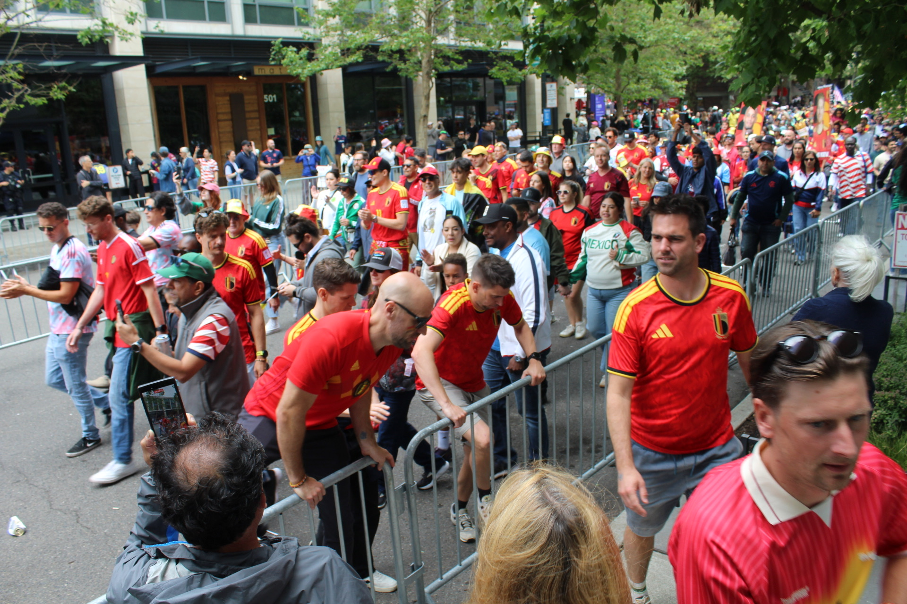

Match-day as Holiday-
Ritual preparation, occurrences and obstacles of fandoms during the 2026 FIFA Men's World Cup in Seattle


Figs. 1–3 — A controversial foul led to Belgium defeating Senegal. Seattle Stadium, Stadium District — July 1, 2026 · Photo: Moriel O'Connor
we have been “you’ve got time” circling up swirling scarves “here if you need” mourning, missing un-blanketing mirrors “one on! one on!” in the tournament’s bedrock “look wide” and for the first time since it was taken to stadia the pitch was living

it is packed here there is no where to sit

if you want to roll dice there’s an open seat at the corner store at the old-town bar i am bringing the ball we’ll go through the boomboxing in occidental park there is extra time listen, the whistle watch, xiangqi g-d willing, goes on Ole, ole, Ole adorning from the smith tower’s crest giving no dollars to find if the mountain is out for now to peer in the shimmering sound the crowd still sways the stage dissipates the spaniards have won lost and loved i’m an eagles fan …

Bibliography
- Bromberger, C. (1995). Football as world-view and as ritual. French Cultural Studies, 6(18), 293–311. https://doi.org/10.1177/095715589500601802
- Rapoport, M. (2011). Creating place, creating community: The intangible boundaries of the Jewish 'Eruv'. In C. Brace, A. R. Bailey, & D. Harvey (Eds.), Spatializing Religion: Encounter, Place and Representation. Routledge. https://www-taylorfrancis-com.offcampus.lib.washington.edu/reader/read-online/8601b1fd-1070-4d9a-8bc2-b3c500f66479/book/epub?context=ubx
- Xygalatas, D., Profeta, V. L. S., Saraei, M., & Baranowski-Pinto, G. (2025). Route of fire: Pregame rituals and emotional synchrony among Brazilian football fans. Proceedings of the National Academy of Sciences, 122(24), e2422779122. https://doi.org/10.1073/pnas.2422779122